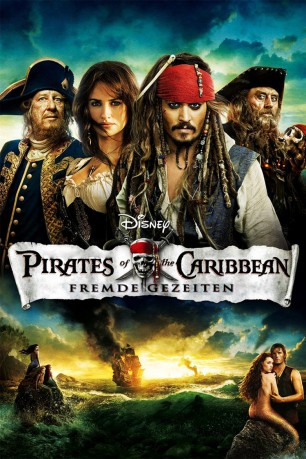
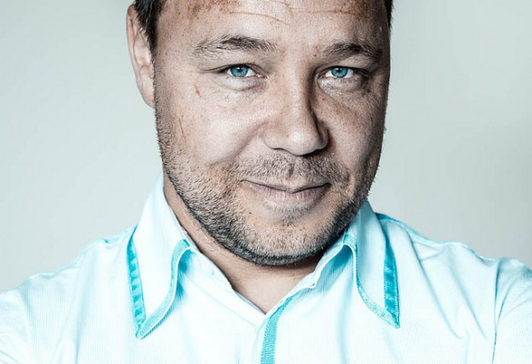
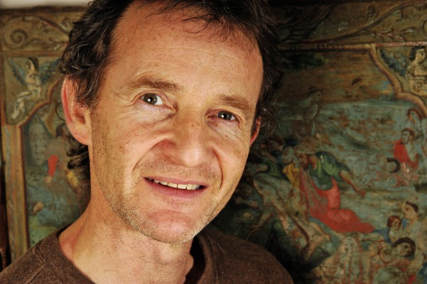
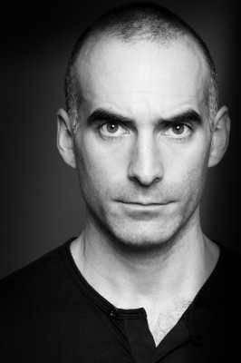
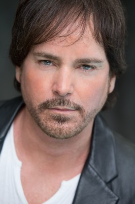

#246 Fluch der Karibik 4 - Fremde Gezeiten
Alternativ: Pirates of the Caribbean: On Stranger Tides
 
 IMDB-Wertung: 6.6 / 10
IMDB-Wertung: 6.6 / 10  Metascore: 45
Metascore: 45 
In Pirates Of The Caribbean – Fremde Gezeiten begegnet Captain Jack Sparrow einer Frau aus seiner Vergangenheit wieder. Angelica heißt die Schöne und Sparrow war in sie verliebt. Oder hat sie ihn nur benutzt? Jedenfalls schickt Angelica den Piraten auf die Suche nach dem sagenumwobenden Jungbrunnen. Dazu muss er an Board der Queen Anne’s Revenge gehen, dem Schiff des gefürchteten Piraten Blackbeards. Captain Jack Sparrow findet sich in Fluch der Karibik 4 wie erwartet in einer abenteuerlichen Geschichte wieder, in der er nicht mehr weiß, wem er vertrauen kann: dem skrupellosen Piraten Blackbeard oder der schönen Frau aus seiner Vergangenheit. Captain Hector Barbossa kann ihm auch nicht wirklich auf die Sprünge helfen, sondern ist eher eine weitere Störung auf der Suche nach dem Jungbrunnen…
Jahr: 2011
Dauer: 136 Minuten
FSK: 12
Land: USA Studio: Walt Disney Studios Motion PicturesTonspuren:
Untertitel: Deutsch, Englisch,
Auflösung: 1080p (1920×1080) Größe: 32563 MB
Genre: Action, Abenteuer, Fantasy
Regisseur:  Rob Marshall
Rob Marshall
Drehbuch: Ted Elliott, Terry Rossio, Ted Elliott, Terry Rossio, Ted Elliott
Soundtrack: Hans Zimmer
Darsteller:
 Johnny Depp als Jack Sparrow
Johnny Depp als Jack Sparrow Penélope Cruz als Angelica
Penélope Cruz als Angelica Geoffrey Rush als Barbossa
Geoffrey Rush als Barbossa Ian McShane als Blackbeard
Ian McShane als Blackbeard Kevin McNally als Gibbs
Kevin McNally als Gibbs Sam Claflin als Philip
Sam Claflin als Philip- Astrid Bergès-Frisbey als Syrena
-  Stephen Graham als Scrum
- Keith Richards als Captain Teague
- Richard Griffiths als King George
 Jonny Rees als Groves
Jonny Rees als Groves Damian O'Hare als Gillette
Damian O'Hare als Gillette Óscar Jaenada als The Spaniard
Óscar Jaenada als The Spaniard-  Anton Lesser als Lord John Carteret
- Roger Allam als Prime Minister Henry Pelham
 Judi Dench als Society Lady
Judi Dench als Society Lady Christopher Fairbank als Ezekiel
Christopher Fairbank als Ezekiel- Paul Bazely als Salaman
 Bronson Webb als Cook
Bronson Webb als Cook- Richard Thomson als Derrick
 Yuki Matsuzaki als Garheng
Yuki Matsuzaki als Garheng Robbie Kay als Cabin Boy
Robbie Kay als Cabin Boy Steve Evets als Purser
Steve Evets als Purser Ian Mercer als Quartermaster
Ian Mercer als Quartermaster Deobia Oparei als Gunner
Deobia Oparei als Gunner- Gemma Ward als Tamara - First Mermaid
 Sebastian Armesto als King Ferdinand
Sebastian Armesto als King Ferdinand- Juan Carlos Vellido als Spanish Sea Captain
- Tristan Laurence als Spanish Fisherman
-  Gerard Monaco als Spanish Officer
- Luke Roberts als Captain of the Guard
- Daniel Ings als Guard
 Emilia Jones als English Girl
Emilia Jones als English Girl Patrick Kennedy als English Father
Patrick Kennedy als English Father- Sanya Hughes als Mermaid
- Antoinette Kalaj als Mermaid
 Derek Mears als Master-At-Arms
Derek Mears als Master-At-Arms Danny Le Boyer als Yeoman
Danny Le Boyer als Yeoman Steve Morphew als Courtroom Heckler
Steve Morphew als Courtroom Heckler Fileena Bahris als Mermaid , uncredited
Fileena Bahris als Mermaid , uncredited- Nicola Bertram als English Woman , uncredited
- CJ Brady als British Sailor , uncredited
 Bern Collaco als Spanish Commanding Officer , uncredited
Bern Collaco als Spanish Commanding Officer , uncredited Andrew Crayford als Spanish Officer , uncredited
Andrew Crayford als Spanish Officer , uncredited- Kristofer Dayne als Queen Anne's Pirate , uncredited
- Nichola Fynn als Flower Seller , uncredited
 Sean Francis George als Spanish Soldier , uncredited
Sean Francis George als Spanish Soldier , uncredited-  Randy Herman als Spanish Soldier , uncredited
- Harley Jay als Junior British officer , uncredited
- Matt Lasky als Queen Anne's Pirate , uncredited
Datei: X:\5-Pentalogie(A-Z)\Fluch der Karibik\Fluch der Karibik 4 - Fremde Gezeiten (2011, FSK12, 1920x1080).mkv seit 15.02.2015
Festplatte: HD Collection-3(N-Z)-6(A-Z)
 Es gibt insgesamt 10 Filme in der Gruppe '5-Pentalogie(A-Z)\Fluch der Karibik'
Es gibt insgesamt 10 Filme in der Gruppe '5-Pentalogie(A-Z)\Fluch der Karibik'